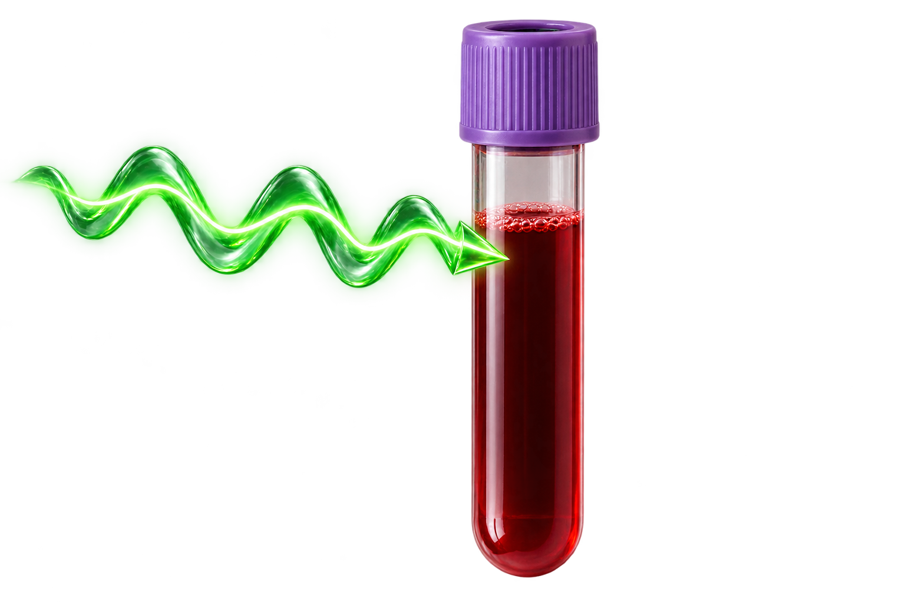
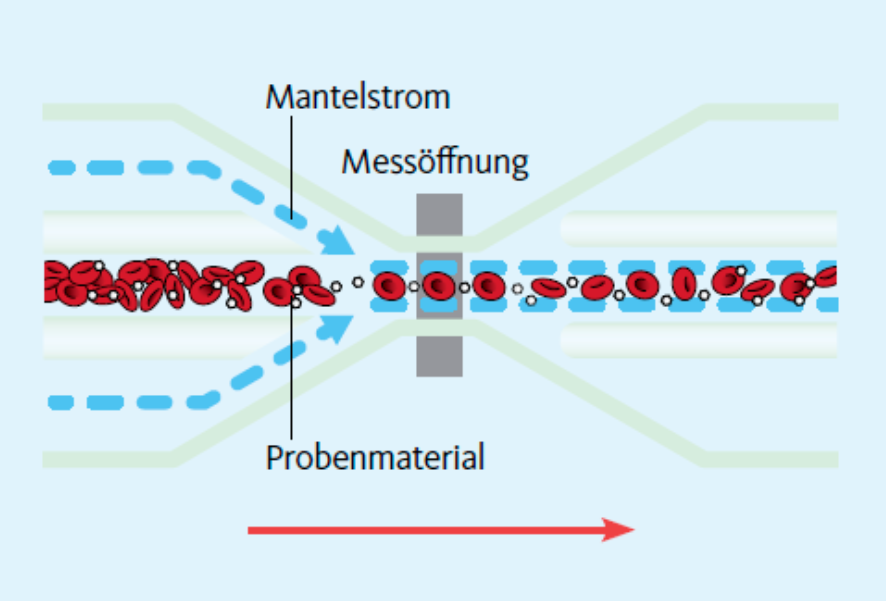
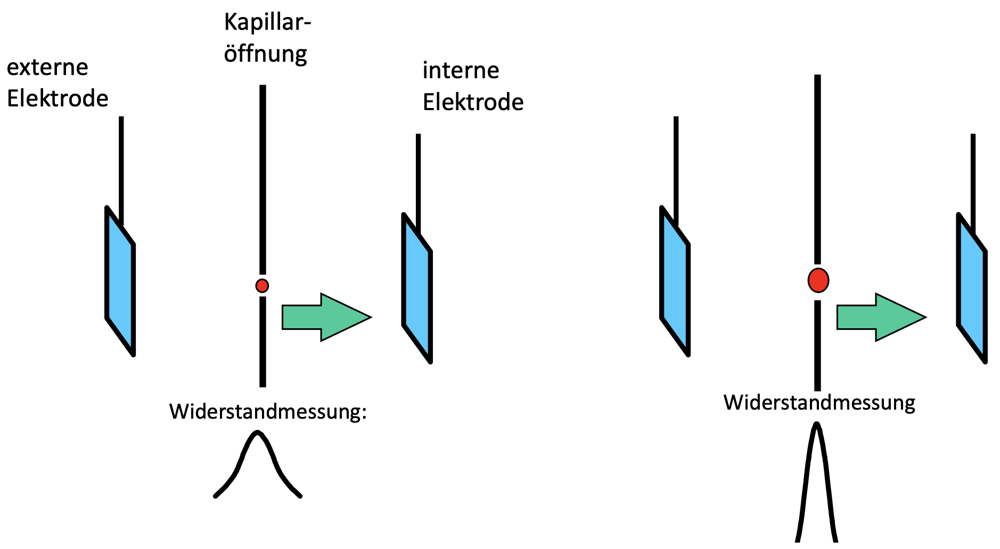
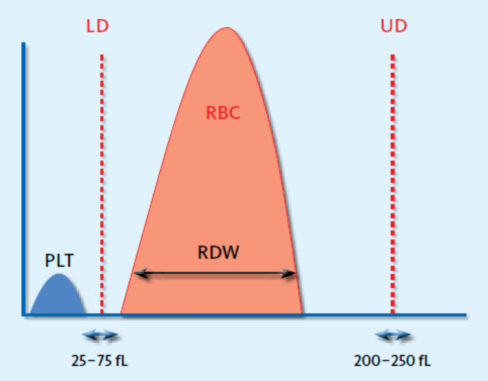
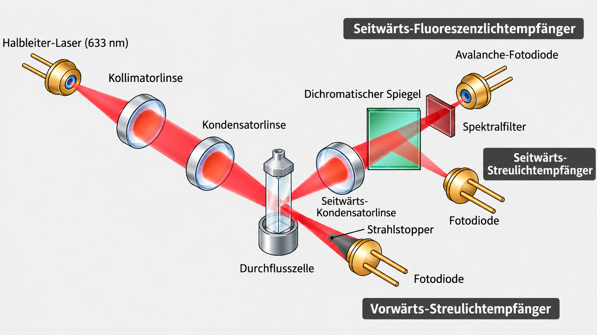
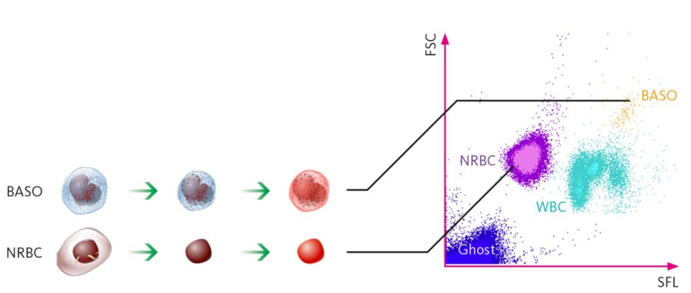
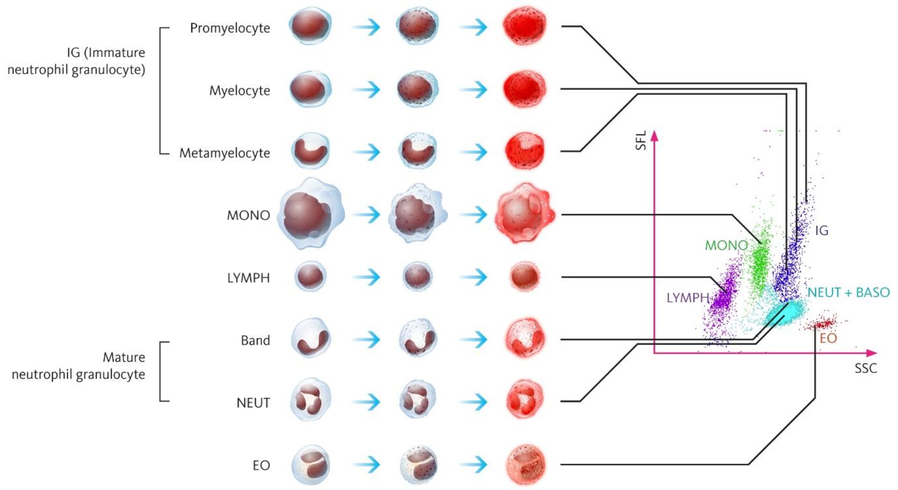
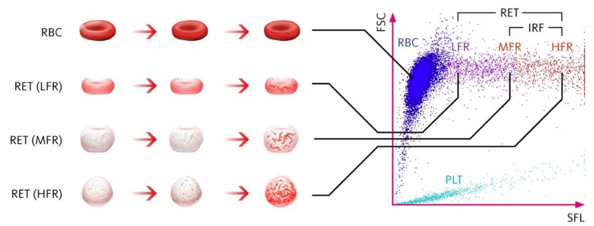
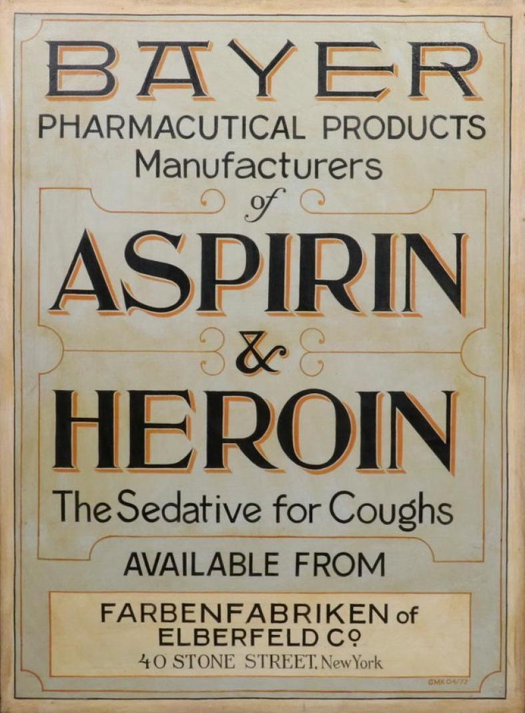

Prof. Dr. phil. nat. René Staritzbichler
10.10.26

Schnupfen?
Labormedizinische Diagnostik sind Grundlage von ca. 70% aller Behandlungsentscheidung
Vor kurzem geht ein Kollege (Mitte 40) von uns in die Klinik und verstirbt.


Höhe des Impedanzsignals ist proportional zu Volumen der Zelle
Unterscheidung Erythrozyten und Thrombozyten





Immunzellen verschiedener Zelltypen und Reifegrade unterscheiden sich im Muster und in der Expressionsstärke ihrer Oberflächenrezeptoren (CD-Marker).
Fluoreszenzmarkierte Antikörper binden spezifisch an diese Marker. Über die Fluoreszenzsignale können Zellpopulationen in Scattergrammen unterschieden und Aktivierungszustände erkannt werden.
| Chromatographie | Elektrophorese | |
|---|---|---|
| Hauptprinzip | Verteilung eines Stoffes zwischen mobiler und stationärer Phase | Wanderung geladener Moleküle im elektrischen Feld |
| Trennkriterien | Polarität, Ladung, Größe, Affinität | vor allem Ladung und Größe |
| Typische Analyte | kleine Moleküle bis Proteine | vor allem Proteine und Nukleinsäuren |
| Anwendungen | HbA1c, Medikamente, Hormone, Metabolite | Serumproteine, Paraproteine, Hämoglobinvarianten |
| Typische Kopplung | Massenspektrometrie, z. B. LC-MS/MS oder GC-MS | Immunfixation, photometrische Detektion |
| Messmodus | Was wird untersucht? | Physikalisches Prinzip |
|---|---|---|
|
pH Potentiometrie |
Säure-Basen-Status | Eine Glaselektrode entwickelt abhängig von der H+-Aktivität eine elektrische Potentialdifferenz. Die Spannung folgt näherungsweise der Nernst-Gleichung. |
|
pCO₂ Severinghaus-Elektrode |
CO₂-Partialdruck → respiratorische Ventilation |
CO₂ diffundiert durch eine gasdurchlässige Membran und verändert den pH einer Elektrolytlösung. Diese pH-Änderung wird potentiometrisch gemessen. |
|
pO₂ Clark-Elektrode |
O₂-Partialdruck → Oxygenierung |
Sauerstoff diffundiert durch eine Membran und wird an einer Elektrode elektrochemisch reduziert. Der dabei entstehende elektrische Strom ist proportional zum pO₂ (Amperometrie). |
|
Elektrolyte Na⁺, K⁺, Ca²⁺, Cl⁻ |
Elektrolyt- und Ionenhaushalt | Ionenselektive Elektroden (ISE) besitzen Membranen, die bevorzugt bestimmte Ionen binden bzw. passieren lassen. Das resultierende Membranpotential wird potentiometrisch bestimmt. |
|
CO-Oximetrie Hb, O₂Hb, COHb, MetHb |
Hämoglobinkonzentration und verschiedene Hämoglobinformen | Die verschiedenen Hb-Formen absorbieren Licht bei unterschiedlichen Wellenlängen verschieden stark. Durch Mehrwellenlängen-Spektrophotometrie werden ihre Konzentrationen aus dem Absorptionsspektrum bestimmt (Lambert-Beer-Gesetz). |
|
Metabolite Glucose, Lactat |
Stoffwechsel und Gewebeperfusion | Enzymatische Biosensoren wandeln den Analyt enzymatisch um. Dabei entsteht oder verbraucht sich eine elektrochemisch messbare Substanz; der resultierende Strom wird amperometrisch bestimmt. |

Jeder macht mal Fehler...